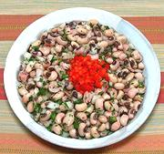

|
Blackeye Pea SaledArmenia - Loupia Aghtzan / Loghlas Piyazi | ||||
| Makes: Effort: Sched: DoAhead: |
5 cups ** 12 hrs Best |
Beans (Lobio) are very popular in Armenia. This easy, outstandingly flvaorful appetizer / salad really emphasizes the flavor of the beans, without or with dressing (see Note-3). | |||
|
1-1/2 1 ------ 1-1/2 1 2 1-1/2 3 ------ 3 3 |
c t --- t t oz oz T --- T T |
Black Eyed Peas, dried (1) Salt for soaking -- Seasonings Salt Alepo Chili (2) Onion Bell Pepper, green Parsley -- Optional (3) Lemon Juice Olive Oil ExtV |
This is a superb party salad as it will stay attractive and delicious for hours on the table. If you can, make far enough ahead so you can refrigerate overnight (or even a couple of days) to let flavors blend. Make - (12 hrs, 25 min work)
|